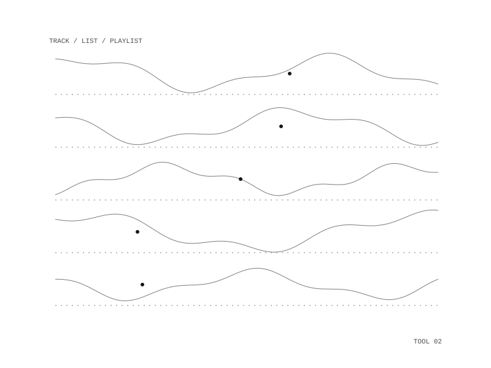

csv-to-applemusic
A small tool that takes a CSV of tracks and makes a new Apple Music playlist from it, reporting every row that did not match cleanly.

Use
Sign in once with make auth, check a list with make dry-run, which matches and reports and creates nothing, then run make import with a playlist name. The CSV needs an artist column and a track or title column; an album column helps choose between releases, and an ISRC column gives exact matches.
Matching
Without an ISRC, each row is matched by a catalog search on artist and title and scored. A row is added without review only when its best candidate scores at least 0.88, and a different song scoring within 0.05 of the best makes the row ambiguous. The catalog can hold one recording under two artist spellings (Radigue and Radique), and that is reported as ambiguous by design.
The report
Every row lands in a report as matched, ambiguous or unmatched, with its confidence and the top candidates, and only matched rows are added. The report is itself valid input: fill in apple_id on the rows you resolved and pass the edited report back to make import, and each id is checked against the catalog before it is used.
Three rules
- It only creates new playlists, and never changes or deletes existing playlists or library items.
- No silent mismatches: every row is matched, ambiguous or unmatched, and reported.
- The signing key and the music user token are never committed or logged.
Docker, driven by make
a CSV with artist and track columns